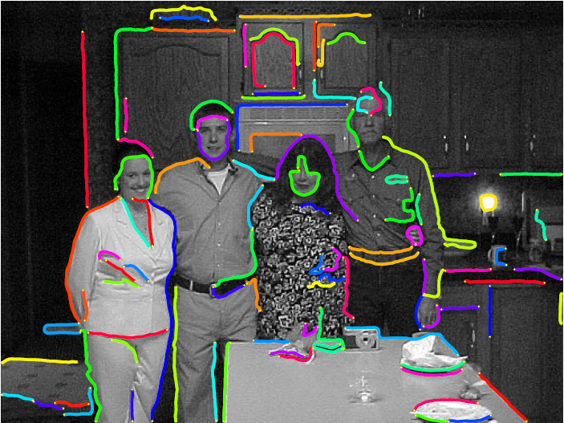
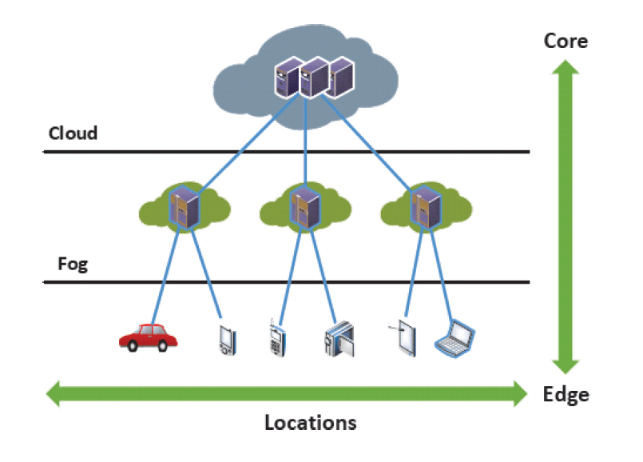

Chenhao Liu
liuch13@mails.tsinghua.edu.cn
About Myself
I am an undergraduate majoring in Electronic Engineering in Tsinghua University since 2013. I am currently affiliated to 3D Image lab, under the guidance of Prof. Huimin Ma. In summer 2016, I spent six wonderful weeks working as an intern in LEMS Lab, Brown University, working with Prof. Benjamin Kimia. During my undergraduate study in Tsinghua University, I got an overall GPA of 86/100, ranking 32 among 196 students. I was active in research activities having been recruited by Tsinghua University's Student Research Training program and Top Open program. I have done several research related to computer vision and data science, and I now have three publications under revision. My research interest spans a wide range in the field of computer vision, especially in topics related to object detection, scene labeling, face analysis, and image analysis method for the above topics, such as contour extraction, image segmentation and motion detection. My dream is to make AI devices interpret visual world as accurately and efficiently as human beings. For more detalis, please see my curriculum vitae.
Projects

A Multi-Stage Method of Contour Extraction.

Dataset for Shaded Object Recognition.
Microexpression Analysis for Psycological Purposes.

Vehicular network and its applications to urban computing.
Contact
Email: liuch13@mails.tsinghua.edu.cn
Cellphone: (+86)1302-125-8624
Mailing Address: Room335B, Zijing 1#, Tsinghua University, Beijing, 100084, P. R. China
Grades of Core Courses
| Course | Grade |
|---|---|
| Database | 98 |
| Functions of Complex Variables and Equations of Mathematical Physics |
97 |
| Calculus (1) | 95 |
| Probability and Stochastic Processes (2) | 94 |
| Media and Cognition | 94 |
| Advanced Matlab Programming and Its Application | 92 |
| Introduction to Auditory-visual Information System | 91 |
| Digital Image Processing | 90 |
| Discrete Mathematics | 89 |
| Computer Program Design (2) | 89 |
| Computer Program Design (1) | 88 |
| Data and Algorithm | 86 |
| Linear Algebra (1) | 84 |
| Linear Algebra (2) | 80 |
| Statistical Signal Processing | 80 |
| Probability and Stochastic Processes (1) | 75 |
| Calculus (2) | 70 |